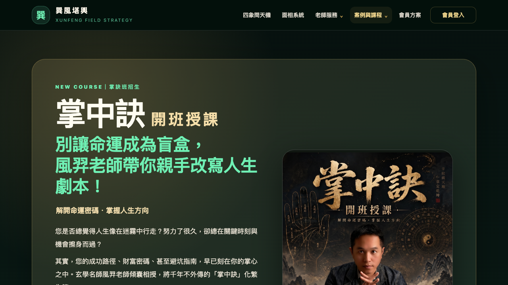

176單元／回歸測試通過
0測試失敗
101Next.js 頁面建置成功
2本輪額外修復缺陷
結論
通過：本輪可自動驗收的功能均正常，且沒有改動付款金額、課程商品代碼、歸因優先序或正式資料。
除原有上傳與後台改善外，本輪再找出並修復兩個邊界問題：課程頁首屏短暫顯示過期資料，以及破損的推廣 cookie 可能讓下單 API 發生例外。
本輪修復
| 問題 | 處置 | 防護效果 |
|---|---|---|
| 課程 API 回應前顯示舊的 6/21 第一期 | 首屏改為中性讀取狀態，不再硬編日期與價格 | 慢網路時不會誤導學員 |
| API 失敗時表單仍可點結帳 | 取得當期課程前鎖定按鈕；失敗後維持鎖定並顯示原因 | 避免資訊不完整時下單 |
含非法 % 的破損 xf_ref cookie | 解碼失敗時安全回傳無歸因 | 無效推廣碼不會擋住付款 |
驗收證據
自動測試
npm run test:unit：176 passed、2 skippednpx tsc --noEmit：通過npm run build：通過，101 頁完成生成git diff --check：通過
正式站瀏覽器
/courses：API 200、三張海報、當期日期與價格正常- 桌機／390px 手機寬度皆可操作
?ref=ran81127：導到三欄註冊並寫入 cookie- 未登入
/admin/site-cases：正確導回後台登入


界線與建議
沒有管理員密碼與全新信箱，因此本輪沒有替使用者寫入正式課程、建立會員或真實刷卡。這是避免影響正式資料與產生費用的刻意邊界，不是程式缺口。
建議：後續仍可由真人做一次「管理員上傳 MP4」與「全新 Email 註冊後下單」的營運驗收；這兩項不影響本輪程式修復與自動化驗收結論。